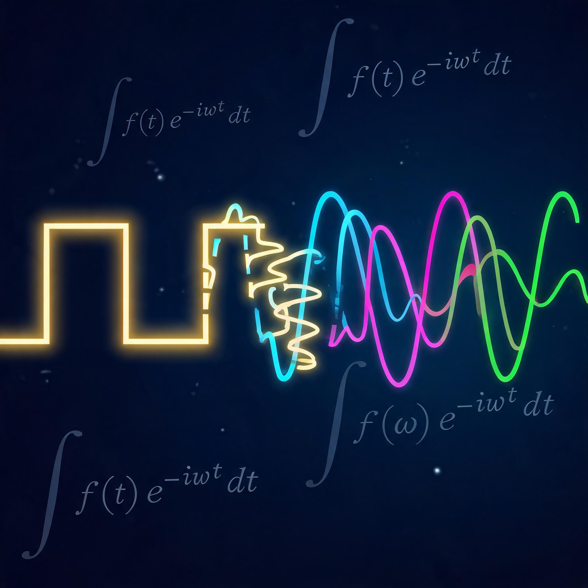

1807 年被法国科学院否决的论文，如今藏在你的每一张照片、每一通电话、每一首歌里。亲手拆解波形，看它怎么运作。

选一种目标波形，拖动滑块增加谐波数量，看正弦波如何一步步逼近它。
拖动滑块到 1，看第一个正弦波和方波的差距。逐步增加到 5、10、20——你会看到逼近速度越来越慢，边角处总有「超调」（Gibbs 现象）。这解释了为什么 JPEG 在锐利边缘容易出现色块。
同一个音高（440Hz），谐波配方不同 = 音色不同。点击听对比，感受「频率的配方」。
钢琴和小提琴弹同一个音，频率相同（都是 440Hz），但钢琴的泛音比例偏向奇次谐波，小提琴的高次泛音更丰富。你听到的「音色」，就是傅里叶级数的系数配方。
JPEG 的核心是 DCT（离散余弦变换）——傅里叶变换的表亲。拖动质量滑块，看同一张图片保留多少频率信息。
人眼对高频细节不敏感（你很难分辨「第 47 次谐波」存不存在）。DCT 变换后，大量高频系数接近零，量化舍去后图片体积大幅缩小，但视觉差异很小。质量调到 10% 以下你才会明显看到色块——那就是信息真的丢太多了。
一个被院士否决的理论，如何用 200 年征服了整个技术世界。
JPEG / HEIF / WebP 的核心——DCT 变换后丢弃人眼不敏感的高频分量
1992 年至今MP3 / AAC / Opus 用 MDCT 分析频率，只保留人耳能听到的部分
1993 年至今4G/5G 的 OFDM 调制 = 逆 FFT。你的手机每秒执行数十亿次傅里叶变换
2009 年至今CT 和 MRI 的图像重建依赖 2D/3D 傅里叶变换，从频率域还原空间信息
1971 年至今语音识别的梅尔频谱图、图像去噪的频域滤波，都建立在 FFT 基础上
2012 年至今射电望远镜阵列用 FFT 合成图像。2019 年首张黑洞照片的核心算法之一
1974 年至今